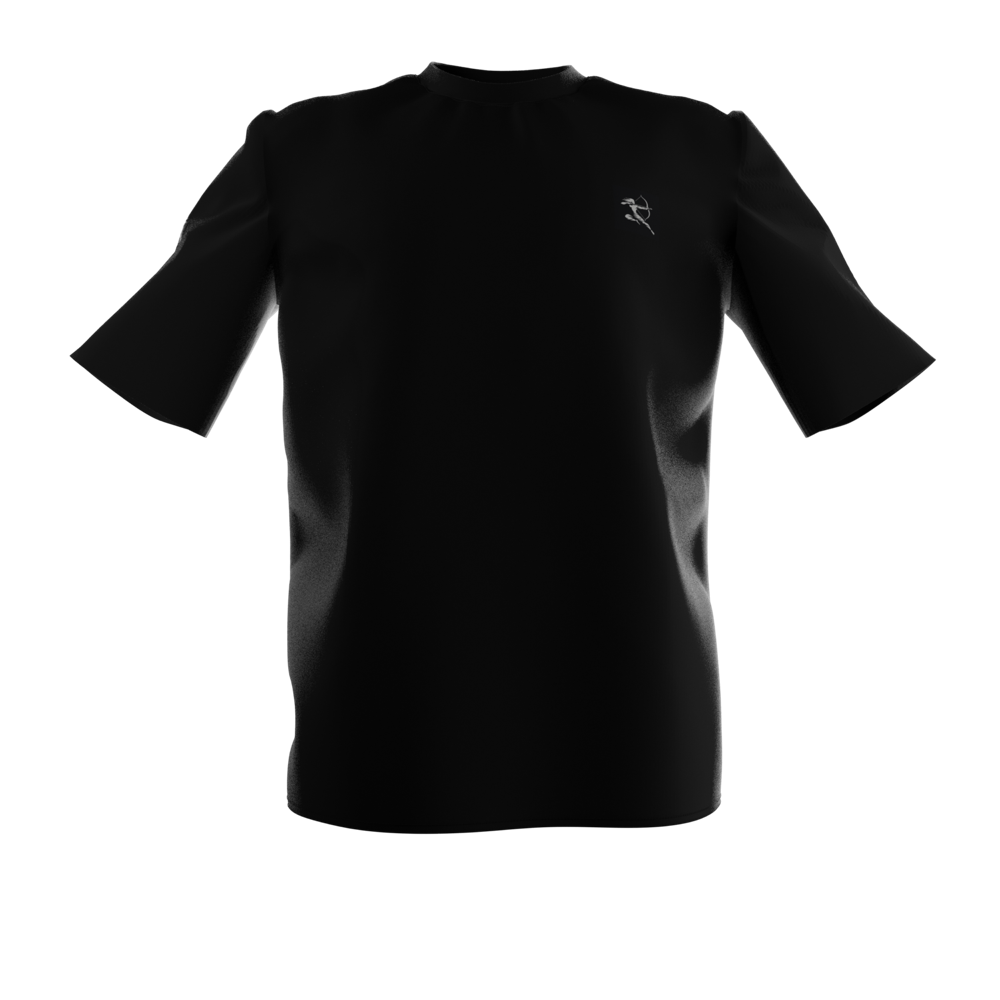
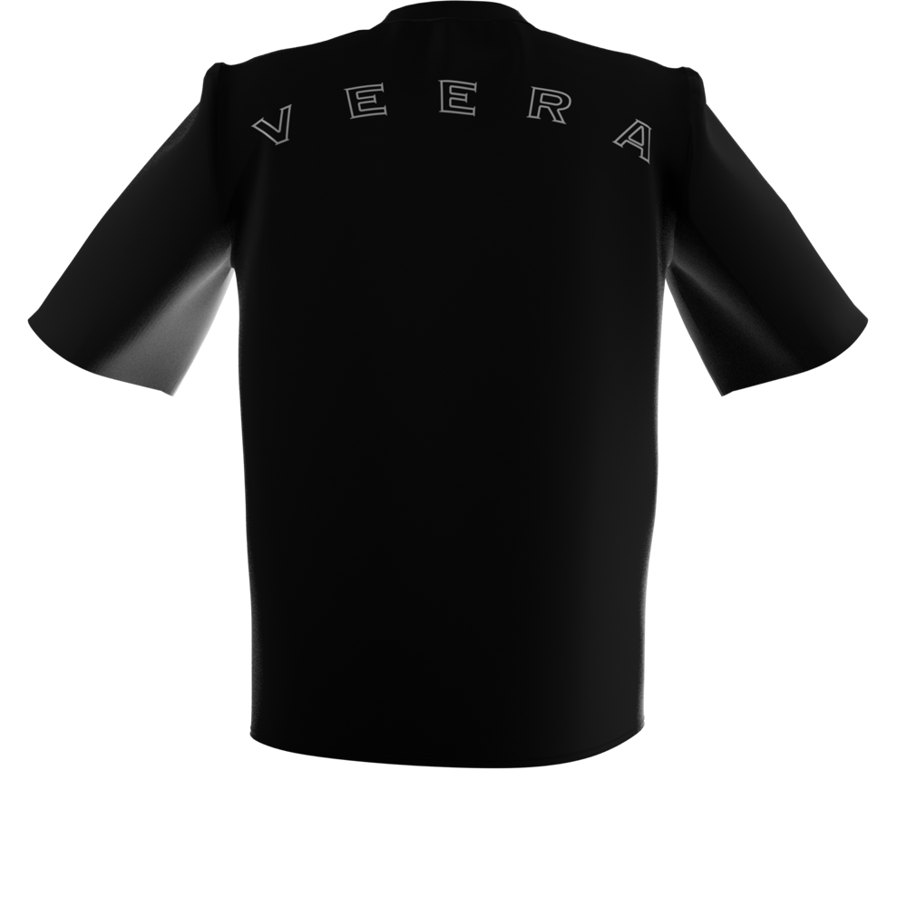

Comfort-first activewear with subtle cultural identity. Not costume, not cliché, just confidently expressive.
Overview
Veera was a lifestyle activewear brand I founded in 2024. The idea was premium, minimal clothing that carries cultural identity quietly, built for everyday wear and not only for events or the gym.
We took it from concept through market discovery, a design system, supplier sourcing, and a small run of shirts that went to beta customers. We then closed it. The product did not stand apart enough from what people already wore, and the market need for ethnic design athletic wear was not there. This page covers what we built and how we reached that call.

Front of tee
My contributionFounder and Product Owner. Owned discovery, brand positioning, the design system, material and cost decisions, supplier selection, and the beta.
Timeline and typeStarted 2024. Apparel and brand, lifestyle and activewear.
ScopeConcept, market discovery, design system, supplier sourcing, and a beta run. Closed after beta.
The end date, team size and who did what, and how many shirts went out to beta customers.
Customer's Challenge
People who want their clothes to say something about where they come from have two choices. Premium activewear looks great and says nothing. Cultural apparel says a lot, but it is loud, graphic heavy, and saved for events. Nothing sat in between that you could wear to the gym, to a café, and to work on the same day.
Looks good, but too loud to wear casually.
Tester, on the first graphic-based concepts
What we did
Interviewed 50+ early potential users, including fitness creators, young professionals, and models, on comfort, fit, and cultural expression
Analyzed premium activewear brands (Lululemon, Alo, Gymshark) to compare tone, brand language, and perception of quality
Identified an opportunity in understated cultural identity, as opposed to bold graphics or printed symbolism
Deliverables: a problem statement, target persona profiles, and brand positioning axes running from minimal to loud and from lifestyle to performance.
Problems
Solutions
Cultural apparel is too loud for daily wear
Tone-on-tone symbolic accents
Premium activewear carries no identity
Minimal branding with a cultural mark
Graphic prints read as costume
Clean silhouettes in a neutral palette
Cheap fabric undercuts a premium story
Mid-weight cotton and cotton-spandex blends
Inventory is a big bet for a new brand
Small-batch drops of 50 to 100 units
Persona
The Young Professional
We spoke with three groups: fitness creators, young professionals, and models. The young professional is shown in full because they wear the same pieces across the most settings.
Arjun M.The Young Professional
AM
Age: 27Work: Hybrid office jobTrains: 4 days a weekWears: Activewear most days
Personality
LoudMinimal
PerformanceLifestyle
Price firstQuality first
Bio
Lives in gym clothes that pass for casual wear. Proud of his background, but does not want to wear it as a print across his chest.
Goals
One wardrobe for gym, café, and weekend
Clothes that feel premium
A quiet nod to identity
Frustrations
Cultural designs that feel like costume
Thin fabric that loses shape in the wash
Logos that shout
How persona discovers the product
Fitness creators, friends, a waitlist page.
How persona uses the product
Wears it to train, keeps it on for the rest of the day.
Motivations
Comfort and fabric feel
Looks premium
Subtle identity
Price
Arjun is a draft built from your interview groups. Swap in the real target persona profiles.
Customer Journey
From first look to everyday wear
Phases
Discover
Consider
Receive
First wear
Everyday wear
Come back
Thoughts and feelings
"Clean. What is the symbol?"
"Is this different from what I own?"
"The fabric feels good."
"Fits well. Nobody would call it a costume."
"It is a nice black tee."
"Would I pay more for this one?"
Emotional experience
User actions
Sees the concept visuals
Compares with brands they already buy
Gets a beta shirt
Wears it to train and out after
Puts it in the weekly rotation
Decides whether to buy again
Touchpoints
Lifestyle visuals, creators
Brand story, renders
Shirt, fabric, packaging
Fit, drape, chest mark
Wash and wear
Feedback conversation
Pain points
Graphic versions felt too loud
Hard to tell apart from other premium tees
None raised
None raised
The subtle mark goes unnoticed
No strong reason to switch brands
User Story
As someone who wears activewear every day, I want pieces that feel premium and carry my identity quietly, so that I can wear them anywhere without feeling like I am in costume.
The journey is my reconstruction from your notes. Correct the quotes and pain points with what beta customers told you.
Define
Discovery narrowed the problem to one tension. People liked the idea of cultural expression, and they would not wear it if it was loud. So the design question became how little you can show and still mean something.
How might we express cultural identity in a way people will wear on an ordinary day?
How might we prove people want it without producing inventory first?
How Might We?
Too loud to wear
Tone-on-tone motifs
Small chest mark
Symbolic over literal
Neutral palette
Has to feel premium
Mid-weight cotton
Cotton-spandex stretch
Matte textures
Wash durability
Small budget
50 to 100 unit drops
Print locally ourselves
Compare suppliers worldwide
Renders before samples
Unproven demand
Concept testing
Waitlist
Shirts to beta customers
Influencer sampling
Ideation
We explored how to show identity, what to make it from, and how to get it made. The loud options were tested first and cut on user feedback.
How identity shows up
Bold cultural illustration
Printed motifs
Tone-on-tone symbolic accents
Minimal chest mark
Outlined wordmark on the back
Materials
Mid-weight cotton
Cotton-spandex blend
Bamboo blend
How it gets made
Local suppliers
Printing designs ourselves
Supplier in India
Small-batch drop
How we test demand
Concept testing with visuals
Shirts to beta customers
Waitlist
Influencer sampling
Selected Ideas for Early Concept
Subtle symbolic accents, no graphics
Cotton and cotton-spandex only
Small batch with an Indian supplier
Beta shirts before any launch
Prototype and User Testing
Focus was on fabric feel, premium perception, and whether we could manufacture at small scale.
Area
Key focus
Material testing
Evaluated cotton-spandex and bamboo blends for softness, stretch, and wash durability
Cost modeling
Created a small-batch feasibility plan for a 50 to 100 unit drop
Brand testing
Compared subtle symbolic accents against cultural graphic printing
Supplier research
Researched suppliers locally and across the globe
Prototype 1: Graphic-based concepts
Explored strong cultural illustration and printed motifs
Built mockups in Illustrator and Figma to test placement and identity
Users said it looked good but was too loud to wear casually
Prototype 2: Minimal and tone-based
Refined into clean silhouettes and tone-on-tone symbolic elements
Matte textures, subtle cultural accents, premium feel
Design System v1: a soft neutral palette of charcoal, stone, and deep navy, minimal branding, and placement rules for symbolic micro-elements
Getting it made
Tried printing designs on our own locally
Compared local and overseas suppliers
Partnered with a supplier in India
Gave a few shirts to beta customers
Front
Chest mark
Back

Outlined wordmark
What testing told us
50+early potential users interviewed
3premium brands benchmarked
2design directions prototyped
50 to 100units planned per drop
Insight
Impact
People want premium minimal more than bold ethnic designs
Shifted away from graphic imagery toward tone-based accents
Fabric feel signals quality
Limited materials to mid-weight cotton and cotton-spandex blends
Cultural identity must be subtle, not loud
Established symbolic over literal cultural designs
Once it was subtle, it did not stand apart from other premium basics
No clear differentiation. Closed the business after beta
Alongside the product we created lifestyle concept visuals for gym, café, and everyday casual settings, a brand story centered on subtle identity, comfort, and self-expression, and an early go-to-market concept of waitlist, concept testing, and influencer sampling. Deliverables: brand story, MVP concept brief, and a design system snapshot.
What the local printing attempt taught you, why the Indian supplier won, and what beta customers said in their own words. Also whether the waitlist or influencer sampling ever ran.
User Stories and Acceptance Criteria
Design
S
As a wearer, I want cultural identity shown subtly, so that I can wear the piece on an ordinary day.
Branding should be tone-on-tone or a small mark, placed by the design system rules. No large graphics or printed illustration.
C
As a wearer, I want colors that go with everything, so that the piece fits my existing wardrobe.
Pieces should come only in the neutral palette: charcoal, stone, and deep navy.
Fabric and fit
F
As a wearer, I want fabric that feels premium, so that I trust the brand.
Use mid-weight cotton or a cotton-spandex blend, tested for softness and stretch.
W
As a wearer, I want it to hold up, so that it stays in my rotation.
Fabric and print should keep their shape and finish through repeated washes.
Launch
B
As a founder, I want to test demand before buying stock, so that I do not sit on inventory.
First production should be a small batch of 50 to 100 units, after beta shirts are in customers' hands.
I wrote these from your design system and material decisions. Replace them with your own requirements if you had them written down.
Risks and Outcome
Why we closed it
Lack of differentiation
Users pushed the design toward minimal. The more minimal it got, the more it looked like premium basics people already owned.
Market need
There was not enough demand for ethnic design athletic wear. People liked the idea more than they needed the product.
What I learned
Subtlety is a strategy, not just a design choice. It also has a cost: the subtler the identity, the harder it is to stand out.
Fabric is the MVP in apparel.
You can validate desirability without producing inventory.
Pricing Strategy
Where it stood
Positioned as premium, next to brands like Lululemon, Alo, and Gymshark.
No retail price was set. Beta shirts were given away.
The model
Small-batch drops of 50 to 100 units, sold direct.
Your target retail price and cost per shirt from the Indian supplier. Confirm that selling direct was the plan.
Lean Business Model Canvas
Problem StatementHow might we express cultural identity in activewear that people will wear on an ordinary day?
Solution
Tone-on-tone symbolic accents
Neutral palette
Premium cotton blends
Value PropositionComfort-first apparel with subtle identity. Not costume, not cliché, just confidently expressive.
Unfair AdvantageNone found. This is why the business closed.
Customer SegmentsFitness creators, young professionals, and models.
Existing Alternatives
Lululemon, Alo, Gymshark
Graphic cultural apparel
Key Metrics
Beta feedback
Waitlist signups
Sell-through of a first drop
High-level Concept
Veera = premium activewear with a quiet cultural mark
Channels
Waitlist
Influencer sampling
Story-first marketing
Early Adopters
Beta customers
Fitness creators
Cost StructureFabric and production with the Indian supplier. Sampling. Shipping. Design and brand visuals.
Revenue Streams (Pricing Model)Direct sales in small-batch drops. Price not set.